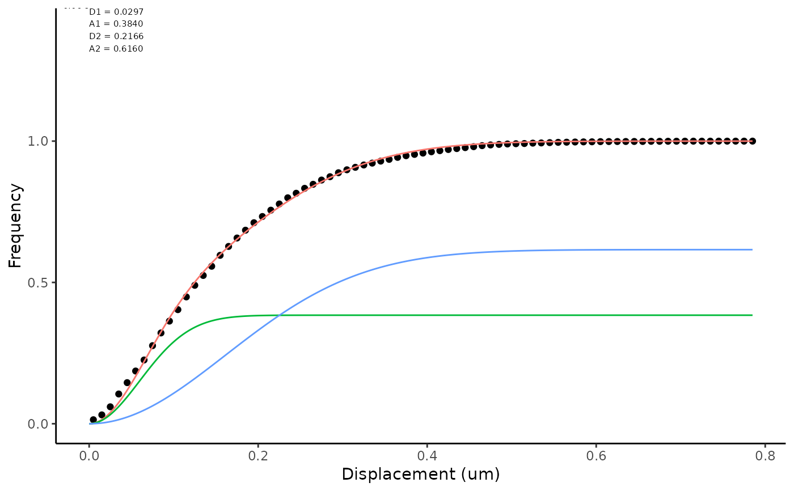

Fitting jump distance (JD) data
fittingJD.RdJump Distances have been calculated for a given time lag. They can be described by fitting curves to the data, either using a histogram or cumulative probability density function. Firtting to a histogram is sensitive to binning parameters and ECDF performs better for general use. The idea behind this analysis is given in: - Weimann et al. (2013) A quantitative comparison of single-dye tracking analysis tools using Monte Carlo simulations. PloS One 8, e64287. - Menssen & Mani (2019) A Jump-Distance-Based Parameter Inference Scheme for Particulate Trajectories, Biophysical Journal, 117: 1, 143-156. The bulk of this code is taken from trackR by JuG
Usage
fittingJD(
df,
mode = "ECDF",
nPop = 1,
init,
units = c("um", "s"),
timeRes = 1,
breaks = 100
)Arguments
- df
data frame with a column named jump of jump distances
- mode
string indicated ECDF (default) or hist (histogram)
- nPop
number of populations of diffusing species (1, 2 or 3)
- init
initialisation parameters for the nls fit for example list(D2 = 200, D1 = 0.1) or list(D2 = 0.01, D1=0.1, D3=10, D4=100)
- units
character vector to describe units (defaults are um, micrometres and s, seconds)
- timeRes
time resolution per unit of jump. Frame interval is 0.5 s and jump interval is two steps, timeRes = 1.
- breaks
number of bins for histogram. With ECDF breaks can be high e.g. 100, for mode = "hist" they should be low, perhaps 30.
Examples
xmlPath <- system.file("extdata", "ExampleTrackMateData.xml", package="TrackMateR")
tmObj <- readTrackMateXML(XMLpath = xmlPath)
#> Units are: 1 pixel and 0.07002736 s
#> Spatial units are in pixels - consider transforming to real units
#> Collecting spot data...
#> Matching track data...
#> Calculating distances...
tmObj <- correctTrackMateData(tmObj, xyscalar = 0.04)
#> Correcting XY scale.
jdObj <- calculateJD(dataList = tmObj, deltaT = 2)
jdDF <- jdObj[[1]]
fittingJD(df = jdDF, mode = "ECDF", nPop = 2, breaks = 100, timeRes = 0.06)
